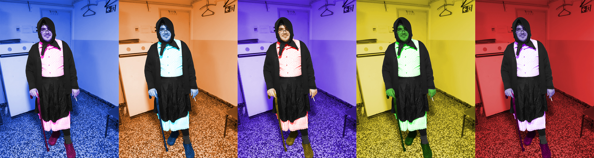

Vježba 1 - Font
Font izrađen u FontForgeu
Vježba 2 - Crtanje Bezierovih Krivulja u Koordinatnom Sustavu
Bazierove krivulje blendane unutar fonta
Vježba 3 - Adobe Illustrator: Sustavi Boja, Transformacije, Multipliciranje, Grupiranje
Primjeri sikopirani s pravih slika
Vježba 4 – Adobe Illustrator: Složeni Objekti i Gradijent
Primjeri za kružni i kvadratni gradijent
Projektni Zadatak 1 - Vektorska Grafika
Primjena gradijenta, fonta, transformacije i bazierove krivulje
Vježba 5 - Retuširanje
 Primjer korištenja healing brush i spot healing brush alata te noise and grain efekta
Primjer korištenja healing brush i spot healing brush alata te noise and grain efekta
Vježba 6 - Koloriranje
 Primjer koloriranja pomoću Hue and Saturation alata
Vježba 7 - Fotomontaža
Primjer fotomontaže s različitim elementima
Projektni Zadatak 2 - Piksel Grafika
 Primjena spot healing alata, scratch and dust efekta, Hue and Saturation alata te fotomontaže
Primjena spot healing alata, scratch and dust efekta, Hue and Saturation alata te fotomontaže
Vježba 8 - Kinemagraf
 Primjer korištenja video manipulacije i statične slike za izradu Kinemagrafa
Primjer korištenja video manipulacije i statične slike za izradu Kinemagrafa